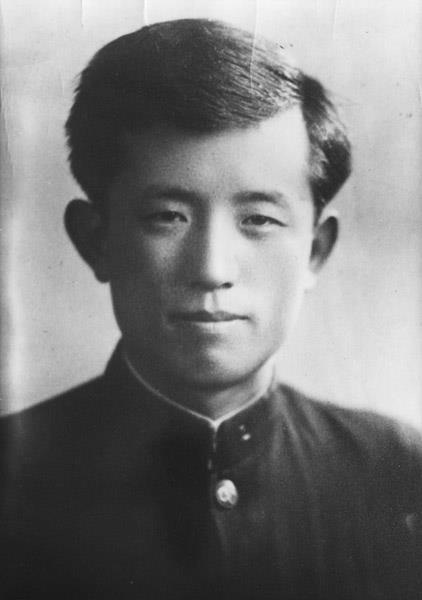
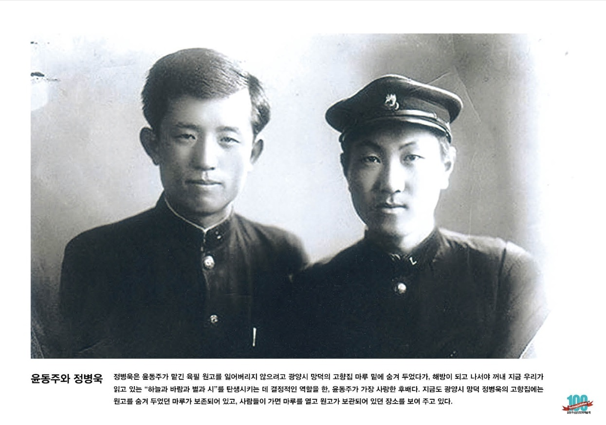
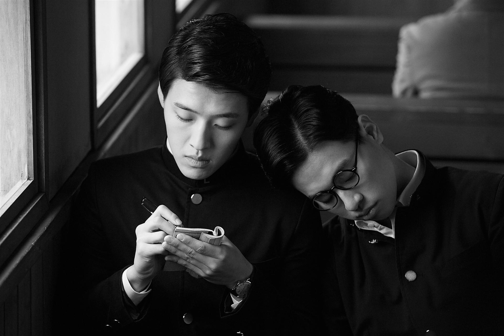

청년기 윤동주초상 사진을 클릭해 전환할 수 있습니다
Poet & Independence Activist
윤동주
尹東柱1917년 12월 30일 ~ 1945년 2월 16일 (향년 27세)
본관 / 아호
파평(坡平) / 해환(海煥)
신분 / 성격
일제강점기 조선의 독립운동가이자 시인. 식민지 지식인으로서 겪는 고뇌와 치열한 자기성찰, 도덕적 결백성을 서정적인 시어로 승화시킨 민족시인입니다.
"별을 노래하는 마음으로 모든 죽어가는 것을 사랑해야지"
序詩 中
Historical Archive
기록으로 만나는 시인의 숨결
윤동주의 문학적 유산과 그 곁을 지킨 소중한 순간들



"부끄러움을 아는 것은 부끄러운 것이 아니다. 부끄러움을 모르는 것이 부끄러운 것이다."